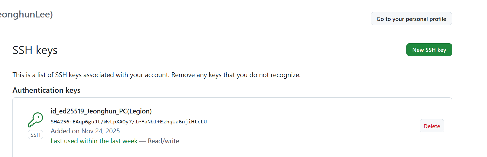

Setup GIT Default
복수 계정을 위해서 설명
- 테스트 결론
- HTTPS 1개 설정 : 개인 설정
- SSH 1개 설정 : 공용 설정
- SSH 2개 설정 : 미권장
VSCode Source Control
- Git 설정은 오직 VSCode Source Control 만 연관
- VS Code Extesion Github 다른 부분과는 연관이 없음
Setup GIT
아래와 같이 HTTPS or SSH로 Git을 설정을하는데, 주로 SSH로 진행을 많이 한다.
-
Git User 설정
모든 곳에 기본설정 local -> global -> system
git config --global user.name "이름" git config --global user.email "이메일" -
확인
git config --global --list
Git Config
- Git 설정 확인
cat ~\.gitconfig
- GIT 설정 추가
- lfs : 대용량 즉 mp4 나 대용량 방식의 파일 및 Binary 저장을 위해서 설정 (default)
- core: 옵션 주로 Window 기반 (option)
- init : 기본 branch (default)
e.g. Ae.g. B[user] email = xxx@xxxx name = xxxxx [core] autocrlf = true editor = code --wait [filter "lfs"] process = git-lfs filter-process required = true clean = git-lfs clean -- %f smudge = git-lfs smudge -- %f[filter "lfs"] clean = git-lfs clean -- %f smudge = git-lfs smudge -- %f process = git-lfs filter-process required = true [user] name = xxxx email = xxx@xxxx [init] defaultBranch = main
- Check Git lfs version
e.g.
git lfs versiongit-lfs/3.7.1 (GitHub; windows amd64; go 1.25.1; git b84b3384)
Git HTTPS
- HTTPS
Git → Git Credential Manager → OAuth 토큰 → GitHub
HTTPS - (PAT, Personal Access Token):
브라우저 로그인 없이, GitHub 계정 설정에서 발급받은 토큰(Token) 비밀번호 대신 입력하여 인증
HTTPS - 자격 증명 관리자 (Credential Manager)
Windows Git Credential Manager(credential.helper = manager)를 사용하는 경우,
최초 한 번만 브라우저 연동 창이 뜨며, 이후에는 시스템이 자격 증명을 안전하게 캐싱하므로
평소에는 브라우저를 사용안함
Git SSH
- SSH
Git → SSH 클라이언트 → 개인키 → GitHub
Setup SSH
-
STEP.1 SSH Key 생성 및 확인
cd ~/.ssh ssh-keygen -t ed25519 -C "xxxx@gmail.com"- 1개의 계정으로 사용하기 권장
ls -a---- 2025-11-24 오후 3:41 411 id_ed25519 -a---- 2025-11-24 오후 3:41 100 id_ed25519.pub -a---- 2025-11-24 오후 4:14 831 known_hosts -a---- 2025-11-24 오후 4:14 93 known_hosts.old
- 1개의 계정으로 사용하기 권장
- STEP.2 Github 사이트 SSH Key 등록
Settings → SSH and GPG keys → New SSH key
id_ed25519.pub Key 등록

https://github.com/settings/keys
-
STEP.3 Git User Global Setup 재확인
모든 곳에 기본설정 local -> global -> system
git config --global user.name "이름" git config --global user.email "이메일" git config --global --list cat ~\.gitconfig -
STEP.4 SSH TEST
ssh -T git@github.com
SSH Multi Accounts
SSH Key 2개 생성
- RSA 보다는 기본적은 ed25519
미권장
- Github Action 미동작
- 1개의 SSH로 그냥 사용하길 권장
- Key A 생성
cd ~/.ssh ssh-keygen -t ed25519 -C "your_personal@email.com" -f ~/.ssh/id_ed25519_company ~/.ssh/id_ed25519_company ~/.ssh/id_ed25519_company.pub
- Key B 생성
cd ~/.ssh ssh-keygen -t ed25519 -C "your_personal@email.com" -f ~/.ssh/id_ed25519_personal ~/.ssh/id_ed25519_personal ~/.ssh/id_ed25519_personal.pub
SSH Config A
기본적으로 SSH Config 존재하지 않으며, 2개의 설정할 경우 별도로 생성
Github Action 동작이 안됨
.ssh/config
- 2개 이상 설정할 경우에만 필요
- 그전에는 기본적으로 없음
- ~/.ssh/config
문제: Github Action 동작이 안됨Host github-personal HostName github.com User git IdentityFile ~/.ssh/id_ed25519_personal Host github-company HostName github.com User git IdentityFile ~/.ssh/id_ed25519_company
Github Action 동작안됨
- 상위처럼 2개로 완벽히 나누면 안됨
- Remote는 동작이 되어지나, VS Extesion 이 동작이 안되는 것임
SSH Config B
기본적으로 SSH Config 존재하지 않으며, 2개의 설정할 경우 별도로 생성
1개의 SSH 로 사용하는 것은 권장
- ~/.ssh/config 변경
문제는 없으나, 개인을 HTTPS로 사용하는게 낫을 듯 싶음
Host github-personal HostName github.com User git IdentityFile ~/.ssh/id_ed25519_personal Host github.com HostName github.com User git IdentityFile ~/.ssh/id_ed25519_company IdentitiesOnly yes
Host github.com default 설정
- 1개의 Git만 허용하는 듯 하며 default 사용해야함
- VS Code Extesion 상위 Host github.com으로만 인식하는 듯
- ssh/config 설정
기본적으로 .ssh/config 가 설정이 안되므로 아래와 같이 강제설정
git config --local core.sshCommand 설정필요
git config --local core.sshCommand "C:/Windows/System32/OpenSSH/ssh.exe -F C:/Users/LeeJeongHun/.ssh/config"
- VSCode - Remote Exploer
SSH 설정 과 Remote 쉽게 확인가능

SSH TEST GIT
- SSH GIT TEST
ssh -T git@github.com Hi JeonghunLee! You've successfully authenticated, but GitHub does not provide shell access.
Setup HTTPS
- HTTPS 기본구조
Git → Git Credential Manager → OAuth 토큰 → GitHub
Browser 인증
- Git Credential Manager 의 경우, Browser로 인증
GCM
GCM: Git Credential Manager
- GCM Log Out
계정이 다를 경우, 다시 Brwser 기반으로 다시 인증git credential-manager github logout "JeonghunLee"